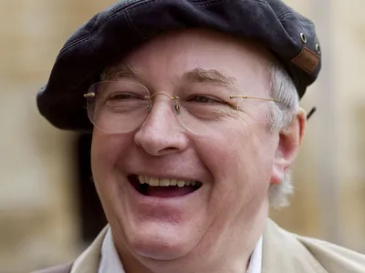

Philip Pullman
Sir Philip Nicholas Outram Pullman CBE FRSL (born 19 October 1946) is an English writer. His books include the trilogy His Dark Materials and The Good Man Jesus and the Scoundrel Christ. In 2008, The Times named Pullman one of the "50 greatest British writers since 1945". In a 2004 BBC poll, he was named the eleventh most influential person in British culture. He was knighted in the 2019 New Year Honours for services to literature.
Philip Pullman was born in Norwich, England, the son of Audrey Evelyn Pullman (née Merrifield) and Royal Air Force pilot Alfred Outram Pullman. The family travelled with his father's job, including to Southern Rhodesia, though most of his formative years were spent in Llanbedr in Ardudwy, Wales.
Northern Lights, the first volume in His Dark Materials, won the 1995 Carnegie Medal of the Library Association as the year's outstanding English-language children's book. For the Carnegie's 70th anniversary, it was named in the top ten by a panel tasked with compiling a shortlist for a public vote for an all-time favourite. It won that public vote and was named all-time "Carnegie of Carnegies" in June 2007. It was filmed under the book's US title, The Golden Compass. In 2003, His Dark Materials trilogy ranked third in the BBC's The Big Read, a poll of 200 top novels voted by the British public.
Books
-
Northern Lights / The Golden Compass
Awards
- Joint-winner of the New English Library's Young Writer's Award, 1972.
- Carnegie Medal
- Guardian Children's Fiction Prize
- CBE in the New Year's Honours list, 2004
- President of the Bla ke Society, 2004